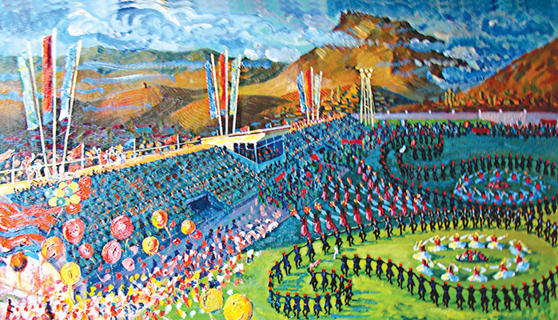

Azərbaycan mədəniyyəti
Azərbaycan mədəniyyəti (azərb-ərəb. آذربایجان مدنیتی [qeyd 1]) — azərbaycanlıların, Azərbaycanda yaşayan xalqların və tarixən mövcud olmuş dövlətlərin mədəniyyəti. Azərbaycanda mədəniyyətin inkişafına tarixən regionda baş verən siyasi və hərbi hadisələr və Azərbaycanın Şərqlə Qərbi birləşdirən ərazidə yerləşməsi təsir edib. Azərbaycan Şərqi Avropa və Qərbi Asiya sərhədindəki Cənubi Qafqaz regionundadır, Avropa Şurasının üzvüdür. Şuşa şəhəri Azərbaycanın mədəniyyət paytaxtıdır. XIV–XV əsrlərdə Azərbaycan türk etnosunun formalaşmağa başlaması ilə Azərbaycan mədəniyyəti ortaya çıxır. İlk dövrlərdə stabil mərkəzləri olmayan bu mədəniyyəti Osmanlı mədəniyyətindən fərqləndirmək çətin idi. XV əsrdə Azərbaycan mədəniyyətinin iki mərkəzi formalaşır: Cənubi Azərbaycan və Aşağı Qarabağ. XVI–XVIII əsrlərdə bu mədəniyyət mərkəzlərinin formalaşması başa çatır. XIV–XV əsrlərdəki Azərbaycan mədəniyyətinin mənbəyindən danışılanda yadda saxlanmalıdır ki, Azərbaycan ədəbiyyatı və mədəniyyətin digər hissələri ayrılmaz surətdə dil ilə bağlıdır. Maddi mədəniyyət isə əhalinin türkləşməsindən sonra belə ənənəviliyini qorumuşdur. Müstəqil olduqdan sonra Azərbaycan mədəniyyətinin İran mədəniyyəti və Ərəb mədəniyyəti ilə güclü əlaqələri saxlanmışdır. Onların ortaq dini və mədəni-tarixi ənənələri vardır.[1] Müxtəlif mənbələrdə Azərbaycan Qafqaz və İslam mədəniyyət mühitlərinin daxilində götürülür.[2][3] Hal-hazırda, 6 müstəqil türk dövlətindən biri olaraq, Azərbaycan Türk Şurası və Beynəlxalq Türk Mədəniyyəti Təşkilatının aktiv üzvüdür. Arxeoloji tapıntılar və müasir dövrə qədər gəlib çatmış maddi abidələr Azərbaycan ərazisində qədim dövrdə (Qobustan petroqlifləri), həmçinin Qafqaz Albaniyası dövründə (Qum bazilikası və Ləkit məbədi) mədəniyyətin inkişaf etdiyini göstərir.[4] Azərbaycanda İslamın yayılmasıyla İslam mədəniyyəti inkişaf edir, məscidlər, mədrəsələr, türbələr tikilir, əsasən dekorativ incəsənətin ornamental forması inkişaf edir. XVI əsrdə Azərbaycan türkləri Səfəvilər imperiyasını qurur.[5] XIX əsrdə Azərbaycanın Rusiyanın tərkibinə daxil olmasıyla burada yaşayan insanlar Rusiya mədəniyyəti ilə və onun vasitəsilə də dünya mədəniyyəti ilə tanış olurlar. XIX əsrin sonu-XX əsrin əvvəlləri Azərbaycanda mədəni Renessans dövrü baş verir (milli oyanış, latın əlifbası layihəsi, milli mətbuat və s.). Sovet Azərbaycanı dövründə Azərbaycan mədəniyyətinin inkişafında əsaslı dəyişiklik baş verir.[6] XXI əsrdə isə Azərbaycan mədəni baxımdan müasirləşir. İkinci Qarabağ müharibəsində Azərbaycanın qələbəsindən sonra bölgənin azərbaycanlı əhalisinin geri qayıtması ("Böyük Qayıdış") üçün işlər başladılmışdır. Azərbaycan İslam dünyasında milli teatrın, operanın, qərb tipli universitetin və baletin əsasının qoyulduğu ilk ölkədir. Azərbaycan Xalq Cümhuriyyəti İslam dünyasında ilk dünyəvi demokratik dövlətlərdən biri, həmçinin İslam ölkələri arasında qadınlara səsvermə hüququ verən ilk dövlətdir.[7] Azərbaycanda UNESCO tərəfindən qeydə alınmış 3 Ümumdünya irsi, 15 qeyri-maddi mədəni irs, 2 əlyazma toplusu, 3 yaradıcı şəhər var.